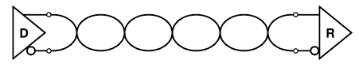
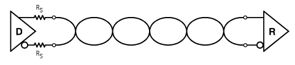
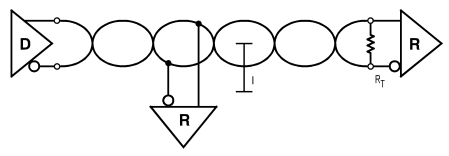
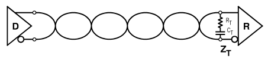
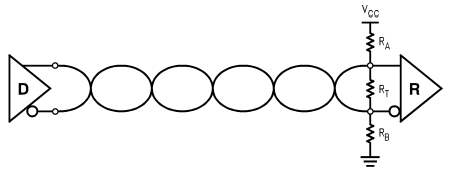
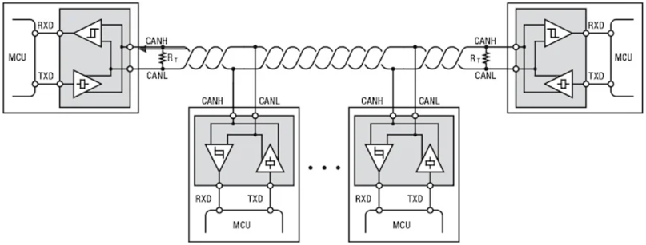
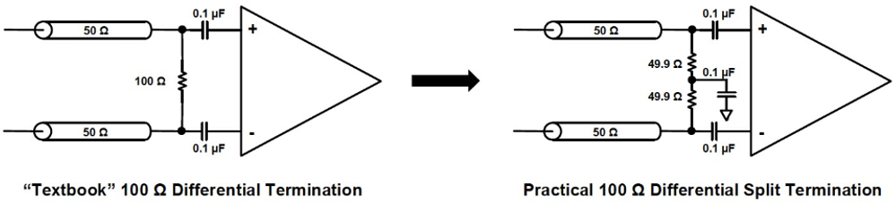
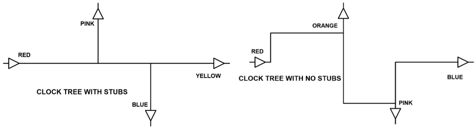
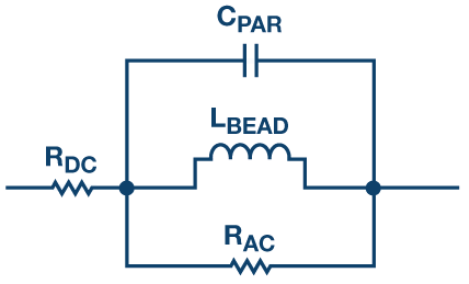

High-Speed PCB Design
Transmission Line & Reflection
现代电路的两个特点：信号的rise/fall time越来越快；wire连接越来越长。此时如果driver, transmission line和receiver的impedance不match，有discontinuity，就会产生reflection，导致各种undershoot和overshoot。
- 水流动时如果受到均匀的阻力，就能比较平稳地到达对岸。但如果不均匀，就会产生反射的水波。
- 考虑上图的情况，信号从driver出发，先流过一段长通道，每一小段unit length的阻力都是50Ω，于是信号平稳流过。
- 然而到达RX端时，突然遇到1MΩ的"brick wall"，产生反射信号。这一反射信号再次从Z0流回TX端。
- 图中TX端看进去的impedance是50Ω，因此反射信号不会再次产生reflection。但如果TX端的impedance与transmission line不match，则会再次产生反射信号。这些信号将在TX和RX之间震荡，直到最终damp out。
以上可以解释为何trace impedance只和width有关，而和length无关。因为信号是逐步流过每一段unit length。Length会影响的是delay：如果delay短的话，the ringing will damp out faster，信号能更快settle。
Reflection coefficient的计算是根据driver impedance (RD)和transmission line impedance Z0：
ρ = (RD-Z0) / (RD+Z0)
这个coefficient会在-1到1之间。理解以下3种情况：
- ρ=-1：说明RD = 0，表示short circuit
- ρ=1：说明RD = ∞，表示open circuit
- ρ=0：No reflection – ideal situation。
Rule of thumb：最常见的FR4 + Copper PCB，假设signal rise time是1ns，则track length < 2 inches为safe；超过了就要考虑transmission line effect。
Termination
Termination的作用就是match impedance，防止reflection。在TX and/or RX端加termination resistor，来保证他们的impedance是50Ω。以下是两种最基础的设计。平时最常用的是RX的parallel termination。如果只有TX termination，有两大问题：依然会有一次reflection，以及只适用于point-to-point。详见Differential Example中的解释。
| 以series termination为例： |
更多topology及优缺点：
| Series Termination (TX) |
|
| Parallel Termination (RX) |
|
| Thevenin's Termination (RX) |
|
| Diode Termination (RX) |
|
| Unterminated |  |
|
|
| Series Termination |  |
|
|
| Parallel Termination |  |
|
|
| AC termination, Power termination |   |
|
|
| Bidirectional termination |  |
|
|
进阶：split termination (Reference 1, Reference 2) 
左边的termination理论上能用，但实际上大家都会用右边。这是因为现实中的信号有nonideality。理论上，differential signal应该完美相反。但考虑common mode的存在，即短时间内两根线上的voltage相等而不是相反。当common mode信号到达termination resistor的两端时，由于resistor上不会产生电流，相当于碰到了open circuit，于是所有common mode noise全部被reflect，而且会在TX和RX之间不停震荡叠加。这时，右边电路中加上的电容相当于enforced a practical AC GND at the center-tap。当CM 信号到达，能产生电流，相当于CM信号也能见到某种意义上的matching impedance（impedance大小由cap决定）。
产生CM noise的原因很多，其中之一就是differential的两根线delay并不完全相同，正信号和负信号之间有一个小的delta。如果是这个原因，那么在选择cap的size的时候，只要能够在这个delta时间内hold the charge steady，那么大小就足够了。或者可以从频域的角度来看，将这个termination看作一个low-pass filter，计算他的corner frequency，公式为fc = 1/(2πR⁄2C)。只要选择corner frequency低到能过滤掉大部分CM noise即可。（比如R = 50Ω, C = 0.1uF的话，corner freq = 64kHz，就是一个不错的数字）
Stubs 桩线
定义：从driver到最远的load之间最长的path是一个transmission line的main line，而any branch off the main line则被称作stub。

上左图中main line是RED到YELLOW，右图则是RED到BLUE。由于右图将所有branch的长度控制得很短，所以认为移除了stub。
当stub的另一端是open end，由于没有absorber和termination，全部信号都会被reflect。这种情况对于波长为4倍stub length的信号来说由为严重，因为经过round trip之后reflected wave正好是反相的，会直接cancel掉原信号。也就是说This shorting of the signal will occur at all frequencies at which the stub is an odd multiple of a quarter wave.（对于RF Engineer，有时会利用这个特性来设计band stop filter，移掉特定的frequency。但对于digital信号的方波，则要避免这种stub。因为方波包含了所有的frequency，如果其中一些被去掉了会影响rise/fall time）
AC/DC Coupling
- AC coupling: allows only AC signals to pass (Notice the caps in the schematic)
- DC coupling: allows both AC and DC signals to pass
如何决定C的大小：
相当于一个high-pass filter。因此选择多大的cap取决于想要过滤掉多少low-frequency的内容。比如上图中的0.1uF，在50Ω的情况下cutoff frequency f=1/(2πRC) 是32kHz，也就是说32kHz以下无法通过，32kHz以上则能通过。因此high-speed transceivers多用0.1uF或0.01uF这样的数字。
Power Filtering
RF Choke
最基本的就是一个inductance。目的是choking off or suppressing high-frequency AC signals, and allowing the passage of low-frequency and DC signals。事实上理想是只pass DC，reject其他所有frequency。越高的frequency会遇到越强的resistance (impedance)。选择合适的L值 - the choke (or the inductor) must have a high impedance over the range of frequencies it is designed to suppress.
Ferrite Beads
FB是RF choke的一种。（得名原因：Chokes are normally built with a coil of insulated wires wounded on a magnetic core or a circular-shaped “bead” of ferrite material strung on a wire. They are often wound in complex patterns in order to reduce their self-capacitance.）
Simplified circuit model:
更多细节详见这里。
Supply Capacitors
上图中有3个cap，分别是47uF, 4.7uF和0.47uF。每个cap的作用略有不同：
- Need one bulk cap (47uF) as the charge bucket, so that the processor can always pull enough charge from it without causing a voltage drop.
- Smaller caps (4.7uF & 0.47uF) react to transients.
- 注意：A 10.1uF cap is not equivalent to 10uF + 0.1uF in parallel. Say we ask for charges every 100ps. The 0.47uF responds to these immediate requests. Then, they are charged by the 47uF at a slower rate. (And 4.7uF is something intermediate.)
注意这些cap在layout中的placement：
- If placed near the chip: reacts to transients.
- If placed near the outline: more a bucket.
这些capacitor又称作decoupling capacitor。原理就是小电池，处理supply line上瞬时的voltage dip。
此处decoupling的意思是“the prevention of undesired electrical energy transfer (coupling) between subsystems”。 任何其他元件如果产生了sudden voltage drop / spike，都不会传导到decouple的元件上。